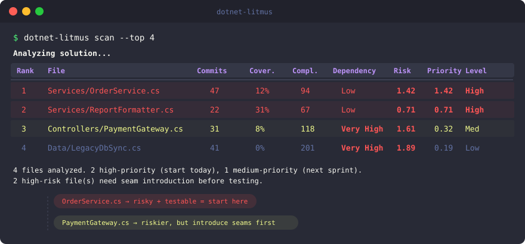

.NET 8+ · CLI Tool · MIT License
Know exactly where to
add tests first
Litmus cross-references git churn, code coverage, cyclomatic complexity, and dependency analysis to produce a single ranked list of files — ordered by how urgently they need tests and how practical they are to test today.
$
dotnet tool install -g dotnet-litmus


